33 四肢：上臂皮肤松弛矫正
上臂皮肤松弛的矫正
WOUTER J. PEETERS AND JANI VAN LOGHEM
33.1 引言
CaHA 通过新生胶原形成过程刺激真皮重塑，其中 I 型胶原逐渐取代 III 型胶原 [1]。组织学检查提示，新胶原和弹性蛋白沉积的最高峰出现在注射后约四个月，并在九个月时达到稳定。对于年龄小于 40 岁的患者，新生胶原形成和新生弹性蛋白生成非常强，一次治疗在四个月内即可带来显著的临床改善。在这种情况下，可考虑在 24 至 36 个月后重新注射。对于年龄大于 40 岁、新生胶原形成过程较慢的患者，建议间隔四个月进行二次治疗以增强真皮重塑。有时需要第三次治疗才能达到最佳的美学效果，此后每 12 至 18 个月进行维持性注射 [2]。
CaHA 已广泛用于面部抗衰老和 HIV 相关脂肪萎缩，其并发症很少，与非感染个体相似 [3]。当使用描述的稀释度通过钝性套管针逆行注射时，不太可能引起不良事件。
33.2 多层方法
有关注射部位的放置，参见图 33.1。
33.2.1 分步技术
-
让患者在直立位进行标记。标记出需要处理的区域以及手术过程中应避免的可见浅表静脉。颈部存在浅静脉颈部静脉受损的风险。腿部易刺破静脉曲张，这会导致持久性瘀伤，在某些情况下还可能导致皮肤永久性变色。此外，还需要标记注射点。使用 50 毫米或 70 毫米套管针时，两个到四个注射点足以处理整个区域（图 33.1）。
-
为患者准备并消毒，使用氯己定或碘伏溶液。首选粗而坚固的 22–25G 套管针；因此，在进入套管针前，应在注射点局部麻醉。
-
然后将 CaHA 进行稀释并在注射前混合，以避免相分离。
-
使用 22–25G 锐针进行逆行注射均匀的混合物。在手臂、腿部、腹部和臀部区域，建议采用多层方法。首先，将套管针尽可能浅地置入浅真皮层。套管针会轻柔刮擦真皮的底层，以促进最大的生物刺激。
- 第一层：用非惯用手拉伸皮肤，将套管针平行于皮肤进入，并逆行注射少量均匀混合物，刮擦
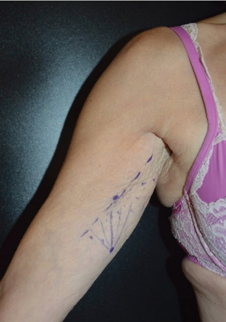
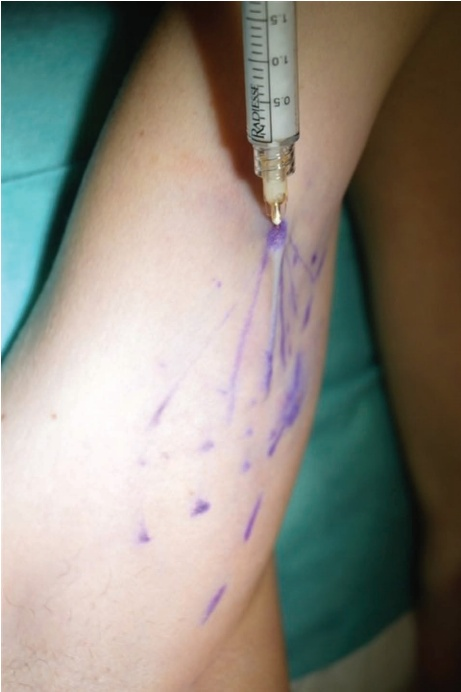
真皮（图 33.2）。使用钝性套管针的全部长度，但要避免尖端接触真皮，尤其是在套管针完全插入时。从内部用力刺破真皮可能会让患者感到不适和疼痛。
第一层稀释的 CaHA 将改善皮肤厚度、紧实度和弹性。
第二层：将钝性套管针以 45° 角轻轻进入，直到感觉到浅筋膜的阻力；然后逆行注射，连接浅筋膜与真皮结构（图 33.3）。第二层稀释的 CaHA 将刺激、强化并增厚这两个皮肤层次之间已存在的胶原纤维，从而使上覆组织可测量地提升。
- 由于在极薄皮肤上的浅表放置和产品的高倍稀释，可能会出现暂时性不规则（图 33.4）。
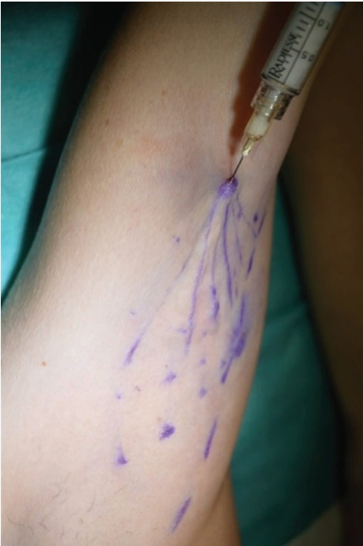
有关术后效果，请参阅图 33.5。
33.3 上臂的钝性套管针技术 对于注射部位，请参阅图 33.6
33.3.1 分步技术
-
对上臂包括腋窝进行消毒。
-
标记需要治疗的区域；通常是一个椭圆形区域。
-
使用每 100 cm2 面积 1.5 mL 的 CaHA；该区域通常使用 3 mL。
-
将 CaHA 稀释至 1:1 至 1:3（取决于松弛的严重程度），并使用 25G, 50 mm 的钝性套管针或 22G, 70 mm 的钝性套管针。
-
将患者体位相对水平，以保证患者舒适和注射便利。
-
可以考虑弯曲钝性套管针以便于操作注射器。
-
向注射方向拉伸皮肤，以控制钝性套管针的正确深度。确保钝性套管针位于真皮-真皮下交界处（图 33.7）。
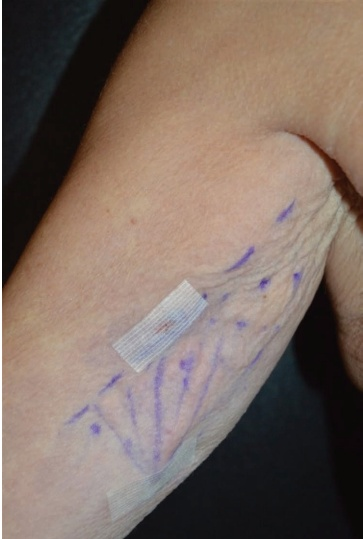
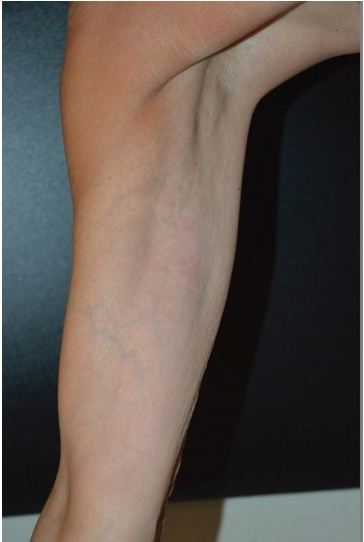
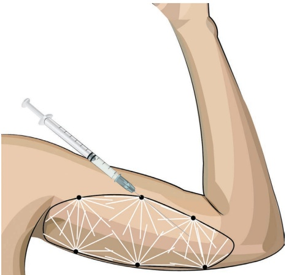
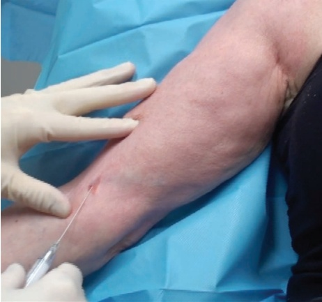
-
以扇形模式，缓慢地进行每次逆行注射约 0.05–0.1 mL 的注射。
-
重复操作，直到所有标记的皮肤都覆盖了一层稀释的 CaHA。
33.4 上臂的锐针技术 对于注射定位，参见图 33.8。
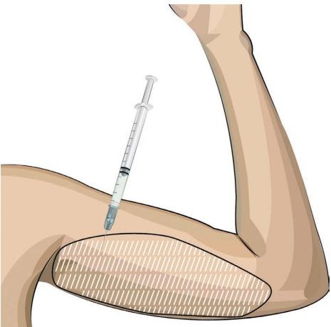
33.4.1 分步技术
-
对包括腋窝在上臂进行消毒；标记和定位如前所述。
-
在该区域使用每 100 cm² 面积的 1.5 mL CaHA。
-
将 CaHA 稀释 1:3，并使用 27–28G 锐针注射。
-
拉伸皮肤的方向与注射方向一致，以控制针头的正确深度。确保针头位于表层真皮下平面，避免任何产品沉积到真皮层。将稀释的 CaHA 置于表层（真皮层）可能导致术后立即可见产品残留物，并在几周或几个月后出现可见且可触及的胶原纤维。尤其是在非常薄的皮肤上，这会导致极具美学干扰性的结果。
-
缓慢地沿着逆行线性丝状物平行方向进行每次逆行注射，每次约注射 0.05 mL（图 33.9）。
-
重复此过程，直到所有标记的皮肤都覆盖了一层稀释的 CaHA。
有关术前和术后效果以及应用技术，请参阅图 33.10。
33.5 术后护理
当生理盐水被吸收后，不规则的区域会在数小时内自发消失（图 33.11）。我们不建议在治疗后进行按摩或佩戴压力衣。
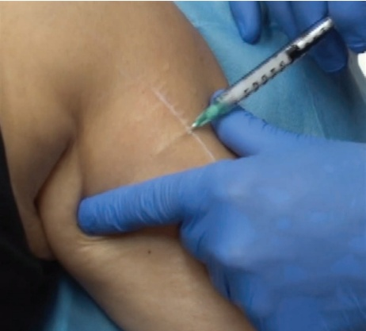
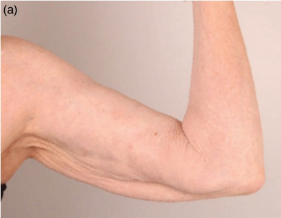
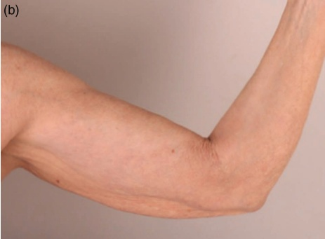
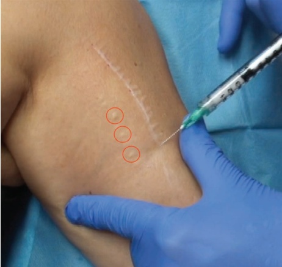
治疗。可建议使用维生素K软膏加速瘀伤的吸收。临床改善预计最早需在治疗后三个月才能观察到。如有必要，可届时考虑进行追加治疗。
33.6 为达到最佳效果的附加治疗
额外的刺激新生胶原形成的疗法将改善预后（微焦超声、射频、激光、去角质、微针等）。
参考文献
[1] Y. Yutskovskaya et al., “A randomized, split-face, histomorphologic study comparing a volumetric calcium hydroxylapatite and a hyaluronic acid-based dermal filler,” J Drugs Dermatol, vol. 13, no. 9, pp. 1047–1052, 2014.
[2] K. Goldie et al., “Global consensus guidelines for the injection of diluted and hyperdiluted calcium hydroxylapatite for skin tightening,” Dermatol Surg, vol. 44, no. Suppl 1, pp. S32–S41, 2018.
[3] F. Chirico et al., “Complications following nonsurgical aesthetic treatments in HIV+ patients receiving antiretroviral therapy: A 12-years experience,” Appl Sci, vol. 11, no. 9, p. 4059, 2021.